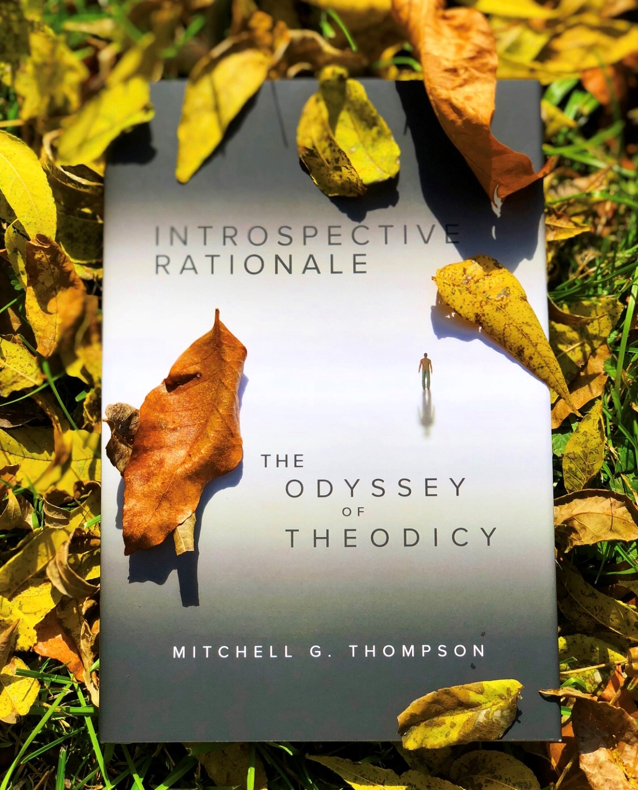

Synopsis
As subjective individual beings, We strive to understand Our place within the objective Universe. The historical
narrative of Mankind reveals the rigidness of individual bias. By understanding the journey of Ourselves, in mass, We
begin to fully appreciate the confines of Our own existence. To such a degree that Our ancient ancestors began to
unveil the quantifiable qualities of Nature’s most fundamental nature - revelations that operate by the rationale of
introspection. An innate process that exposes the divine exaltation of some transcending being, namely elevated
consciousness. Only in knowing what One does not know will One come to know the unknown, Journey on an odyssey of
theodicy to prove “god’s” existence. Where the story of Ourselves acts as an arbiter for the Universe constantly
looking within and maintaining itself both as above to so below.